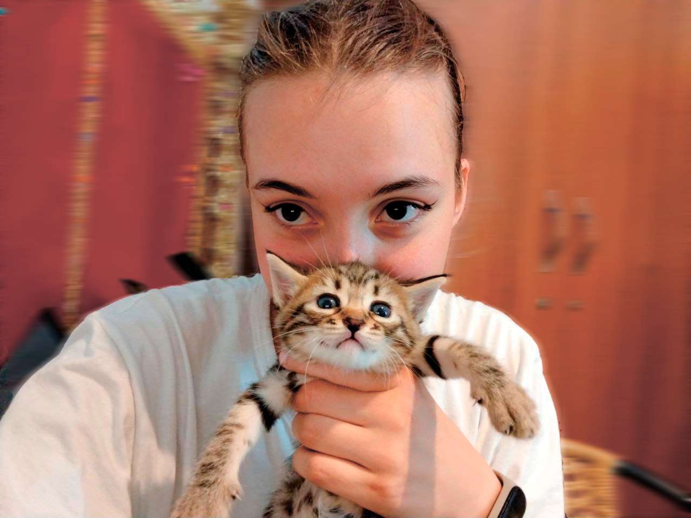

Никитина Майя Александровна

Учусь на веб разработчика, веб дизайнер
Хочу научиться писать сайты, базам данных, научиться фронтенд и бекенд разработке. Меня завораживает магия создания сайтов. Это не просто про код и верстку — это точка входа в целую вселенную влияния, где я становлюсь режиссером реальности. Всё начинается с чистой страницы, потенциальной пустоты, которую можно заполнить не просто информацией, а тщательно выстроенным путешествием. Мне нравится управлять взглядом пользователя: вести его по странице невидимой нитью, от главного заголовка к блестящей кнопке, от идеальной картинки к отзыву, который вызывает доверие. Искусство лендинга — это высшая форма такой манипуляции, где каждая деталь работает на спонтанное, но такое желанное хочу. Это эмоциональный конструктор, и я хочу знать, как подбирать его детали с ювелирной точностью.
Но чтобы создавать такую визуальную магию, нужно погружаться глубже — в саму природу притягательности. Поэтому меня тянет изучать, как работает идеальная картинка из Pinterest или Instagram. Это не случайность, а точный расчет: ракурсы, которые вытягивают линию тела, тени, лепящие форму, освещение, создающее нужное настроение. Это знание перетекает в понимание поз, макияжа, подбора одежды и украшений, которые рисуют в воздухе красивый, правильный силуэт. Даже выражение лица — это инструмент, который можно настроить на симпатию и открытость.
Я считаю композиция самая важная вещь если работаешь на внешний вид. Начиная с цифрового холста — сайта — и дойти до того, как выстроить каждый луч света, каждый жест и каждую фразу в гармоничную, убедительную историю. Потому что в основе и продажи, и личного обаяния лежит одно: умение создать нужное впечатление, повести за собой, вызвать нужную эмоцию. И сайт — это лишь первая, но безгранично мощная дверь в этот мир.